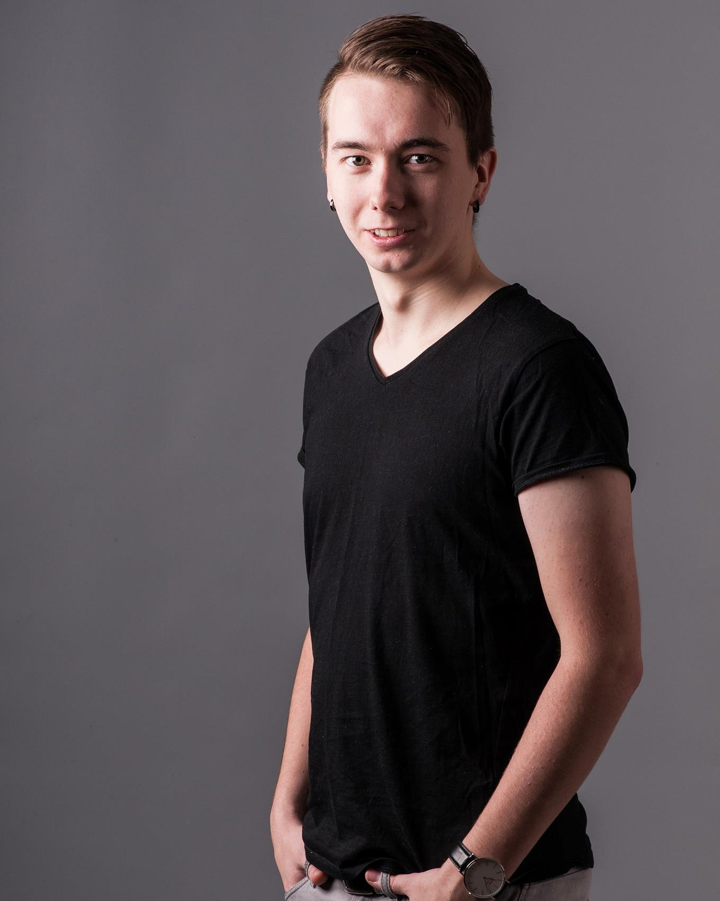

Litt om meg selv!

Jeg heter Kristoffer-Andre og er 20 år. Jeg har fagbrev som produksjons-elektroniker,
og har jobbet hos Mekatronikk i Åsane i 4 år. På videregående gikk jeg TAF-elektro.
Dette er en ordning der en går på skolen og jobb samtidig, man ender om med både yrkesfagene,
og realfag med studie kompetanse. I tillegg starter en ut på jobb i bedrift fra dag en,
og får lærlingtid og til slutt ett fagbrev.
Dette synes jeg har vært en fordel, siden da har jeg
kunnet brukt både praksisen og teorien om en annen i løpet av utdanningsløpet. I tillegg sparte jeg et helt år,
da man normalt hadde brukt 5 år på samme utdanning, brukte jeg 4 år med denne TAF-ordningen.
Bybanen er livet
Ellers er jeg bodsatt på Lagunen med samboeren min, jeg kommer opprinnelig fra Sveio utenfor Haugesund. Jeg har bodd i Bergens området i litt over 4 år. Nettopp pusset opp leilighet og har anskaffet en kanin. Og begynt å pendle med bybanen, som forøvrig krever god tolmodighet og at man setter pris på små ting som sitteplasser. Trives også godt her i regnet hehe...
Øresus og lukten av svidde prossesorer
Som hobbyer spiller jeg mye bass og gitar, og bruker mye tid rundt linux og data. Blandt annet har jeg flere raspberry pi's som jeg leker meg med, og har i tillegg en dedikert linux server som streamer innhold til det av elektroniske duppedingsere jeg skulle nå bruke. På musikk siden har jeg spillt i flere band, interessene innenfor musikk er nok mye trash metall. Men jeg er mottakelig for det meste, skulle jeg si noen norske band jeg hører spesielt mye på må det nok være Kvelertak, Honningbarna og Skambankt!!
Motivert til å kjempe
Jeg ser frem til å ta data-ingeniør utdanningen, jeg er motivert og ønsker å lykkes. Jeg er interessert i faget, liker å lære om data og programmering. Jeg håper denne utdanningen gir meg det jeg ønsker, og at jeg får den drømme jobben jeg vil ha.
| Personer | Klasse | |
|---|---|---|
| Colin | Email Colin | 16HDATA |
| Jacob | Email Jacob | 16HDATA |
| Kristoffer-Andre | Email Kristoffer-Andre | 16HDATA |
| Peder | Email Peder | 16HDATA |